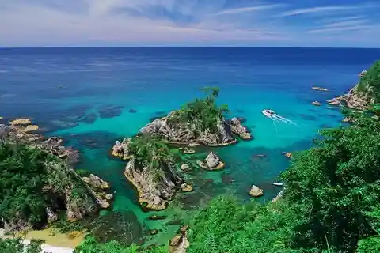
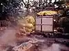
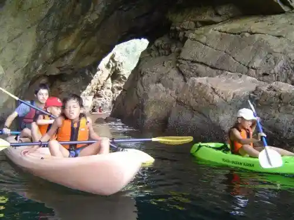
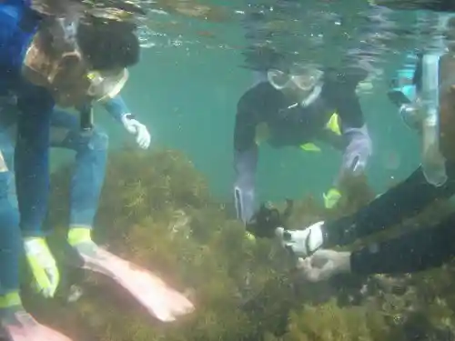

Ura Tomi Coast Ura Tomi Beach
Iwami, Tottori · 0857-72-3481 · Official / source link
Ura Tonomi Kishi Shima Meguri Yuransen
Iwami, Tottori · 0857-73-1212 · Official / source link

Iwai Onsen
Iwami, Tottori · 0857-72-1515 · Official / source link

Shiikayakkutsuringu
Iwami, Tottori · 0857-73-0118 · Official / source link

Shu no Ga Ringu
Iwami, Tottori · 0857-73-0118 · Official / source link

San'in Kaigan Jio Park Shizen Sansaku
Iwami, Tottori · 0857-72-3481 · Official / source link
Takisan Onsen
Iwami, Tottori · 0857-72-8337 · Official / source link
Karakawa no Kakitsubata Gunraku
Iwami, Tottori · 0857-72-3481 · Official / source link
Higashihama Beach
Iwami, Tottori · 0857-72-3481 · Official / source link
Kai to Umi no Akusesarii Experience
Iwami, Tottori · 0857-73-0118 · Official / source link
Makiya Beach
Iwami, Tottori · 0857-72-3481 · Official / source link
Mana Yaki Togei Experience
Iwami, Tottori · 0857-37-5322 · Official / source link
Yukamuri Onsen
Iwami, Tottori · 0857-73-1670 · Official / source link
Surume Zukuri Experience
Iwami, Tottori · 0857-72-3481 · Official / source link
Terakotta Togei Experience
Iwami, Tottori · 0857-73-0118 · Official / source link
San'in Kaigan Jio Park Umi to Daichi no Nature Kan
Iwami, Tottori · 0857-73-1445 · Official / source link
Jibiki Ki Ami Experience
Iwami, Tottori · 0857-72-3481 · Official / source link
Nashi no Ki no Mokko Experience
Iwami, Tottori · 0857-72-3481 · Official / source link
Ozaki Sui Museum
Iwami, Tottori · 0857-72-1515 · Official / source link
Zuisen
Iwami, Tottori · 0857-72-0271 · Official / source link
Bijutsu Kansho Mana Experience
Iwami, Tottori · 0857-72-3481 · Official / source link
Jio De Kaku Shodo, Jio De Egaku Kaiga
Iwami, Tottori · 0857-72-3481 · Official / source link
Roadside Station Kinanse Iwami
Iwami, Tottori · 0857-73-5155 · Official / source link
Supurasshuadobencha AQUA (Akua)
Iwami, Tottori · 0857-73-1212 · Official / source link
Iwami Town Hall
Iwami, Tottori · 0857-73-1411 · Official / source link